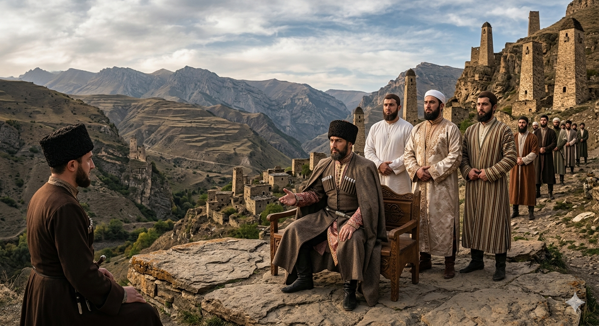

И.А. Дахкильгов. Хьехаме дувцарш - поучительные рассказы-притчи.
И.А. Дахкильгов. Хьехаме дувцарш - поучительные рассказы-притчи. Из ингушского фольклора.

Цунна тӀехьа лаьттараш тхо дар
Вай пайхамар бакъдолча дунен тӀа дӀаваха тоъал ха яьнначул тӀехьагӀа Турпал Ӏаьла хилар бусалба наха керте латташ. Цкъа цхьанне хаьтта хиннад Ӏаьлийга: - Ва-а Ӏаьла, вай пайхамар волча хана вӀаший барт, им чӀоагӀдеш хьадаьхка ма дарий вай. ХӀанз барти имми дохаш латт, цхьадола хӀамаш астагӀа лелха даьннад. Ер фуд? ХӀанад ер иштта? - Укхан бахьан ер да, - жоп деннад Турпал Ӏаьлас, - вай пайхамара тӀехьа лаьтта асхьабш бар сои, Ӏумари, Османи, Абу-Бакари санна бола асхьабаш. Цудухьа барт, им, денал дар. ХӀаьта хӀанза тхона тӀехьаэтта асхьабаш шо мо эсала нах хилар бахьан да.
РУССКИЙ
За ним мы стояли
Прошло немало времени после того, как наш пророк ушел в лучший мир. Во главе мусульман стал богатырь Али. Кто-то его спросил: - О-о, Али, во времена пророка мы все были дружны, преданы вере, а теперь все это рушится. Между нами пошел разлад. Почему все это так происходит? - Я скажу тебе, в чем причина, - ответил Али, - за нашим пророком стояли такие преданные асхабы-сподвижники, как я, Умар, Осман, Абу-Бакар. Поэтому было и согласие, была и чистота веры. А теперь за нами уже стоят такие слабые и никчемные асхабы-сподвижники, как вы. В этом вся причина.
ENGLISH
We were standing behind him
Quite some time had passed since our Prophet had passed away. The mighty Ali had become the leader of the Muslims. Someone asked him: 'Oh, Ali, in the Prophet's time we were all united and devoted to our faith, but now all that is falling apart. Discord has arisen amongst us. Why is all this happening?' 'I shall tell you the reason,' replied Ali, 'our Prophet was supported by such devoted companions as myself, Umar, Uthman and Abu Bakr. That is why there was harmony and purity of faith. But now we are supported by such weak and worthless companions as yourselves. That is the whole reason."
НОХЧИЙН
Цунна тӀаьхьа лаьттараш тхо дар
Вай пайхамар бакъдолчу дуьнен тӀе дӀавахан тоъал хан йаьллачул тӀаьхьа Турпал-Ӏела хилар бусулба нехан коьрте лаьтташ. Цкъа цхьамма хаьттина хилла Ӏелега: - Ва-а Ӏела, вай пайхамар волчу хенахь вовший барт, им чӀагӀдеш схьадаьхкина ма дарий вай. ХӀинца бартий иммий духуш лаьтта, цхьадолуш хӀуманаш астагӀа лелха дойлла. ХӀара хӀун ду? ХӀунда ду хӀара иштта? - ХӀокхун бахьан хӀара ду, - жоп делла Турпал-Ӏелас, - вай пайхамаран тӀаьхьа лаьттина асхабаш бара соий, Ӏумарий, Османий, Абу-Бакарий санна болу асхьабаш. Цундела барт, им, доьнал дар. ХӀета хӀинца тхуна тӀаьхьахӀоьттина асхьабаш шу санна эсала нах хилар бахьан ду.
ПОГОВОРКИ
Адамий барт кхерийла чӀоагӀагӀа ба. Единство народа крепче камня. The unity of the people is stronger than stone. Адамийн барт кхеранал чӀогӀах бу.Ахчано воацачох вар вой а, ше воацар-ам хургвац. С деньгам и ничтожество мнит себя величиною, но стать ею ему не дано. Money can make a nobody feel like somebody, but it cannot truly make him one. Ахчано воцучурах верг вой а, ша воцург-м хир вац.Аьл тӀа хайнавар аьнна, аьла хилац. Сев на стог, князем не станешь (игра на созвучии слов “князь”, “стог”). Sitting atop a haystack doesn't make you a prince (a play on the similar-sounding words for "prince" and "haystack"). Элан тӀе хиъна вар аьлла, эла хилац.БӀаь уст-говра хулачул бӀаь йиша-воша хилар тол. Лучше иметь многочисленную родню, чем сотню голов скота. Better to have a hundred kin than a hundred head of cattle and horses. БӀе сту-говр хуьлучул бӀе йиша-ваша хилар тоьлу.Дахча кхатуллаш ца хилча, цӀи йов; лелаеш ца хилча, гаргало а йов. Огонь гаснет, если не подкладывать дров; родство угасает, если его не поддерживать. Fire dies out if you don't feed it wood; kinship fades if you don't tend to it. Дечиг кхетуьллуш ца хилча, цӀе йов; леладеш ца хилча, гергарло а дов.Кхыметтел хьунагӀара гаьнаш а хул лакхагӀеи лохагӀеи йолаш. Даже деревья в лесу бывают высокими и низкими. Even trees in the forest come in different heights, tall and short. Вуьшта аьлча хьуьнара дитташ а хуьлу лекхахий лохахий а долуш.Лакхача хена кӀоарга овла беза, сага доккха йиша-вошал деза. Высокому дереву нужны глубокие корни, а человеку – большая родня. A tall tree needs deep roots; a person needs many kin. Лекхачу диттана кӀорга орам беза, стагана доккха йиша-вашалла деза.Лоам бухье цхьаькъа лаьтта поп дукха лаьттабац. Одинокая чинара на вершине горы долго не стоит. A lone plane tree on a mountain peak does not stand for long. Лам буьххье цхьалха лаьтта поп дукха лаьттина бац.Наьха дикал – дукхал я. Достоинство народа (родни) в его многочисленности. The worth of a people (kin) lies in its numbers. Нехан дикалла - дукхалла йу.Новкъост воацаш араваьнначун никъ шозза халагӀа ба. Без попутчика дорога в два раза труднее. The road is twice as hard for one who sets out without a companion. Накъост воцуш араваьллачун некъ шозза халах бу.Овлаш кӀоарга доахка хи михо божоргбац, фу-тайпа дола саг кӀалвусаргвац. Дерево с глубокими корнями ветру не свалить, человека с многочисленной родней никому не одолеть. The wind cannot fell a deep-rooted tree; no one can overcome a man with many kin. Орамаш кӀорга дохку дитт мохо дожор дац, хӀу-тайп долу стаг кӀелвуьсур вац.Цхьан пӀелгах бий хиннабац, цхьан баьречох бӀы хиннабац. Не сжать в кулак один палец, не создать дружину из одного всадника. One finger cannot make a fist; one rider cannot make an army. Цхьана пӀелгах буй хилла бац, цхьана беречух бӀо хилла бац.